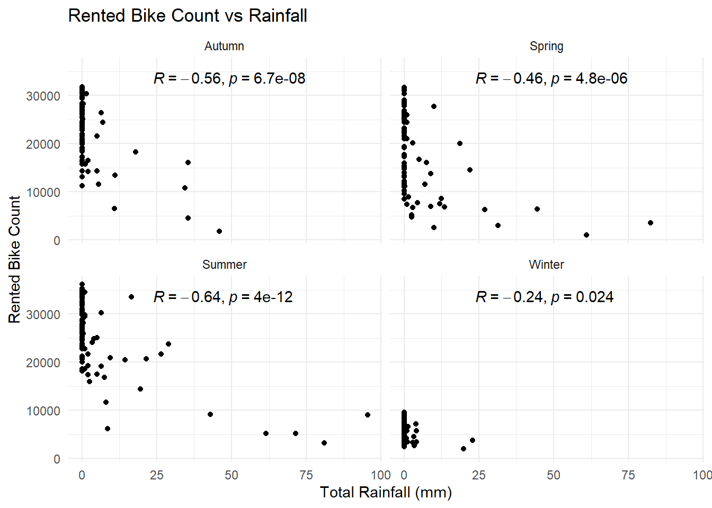
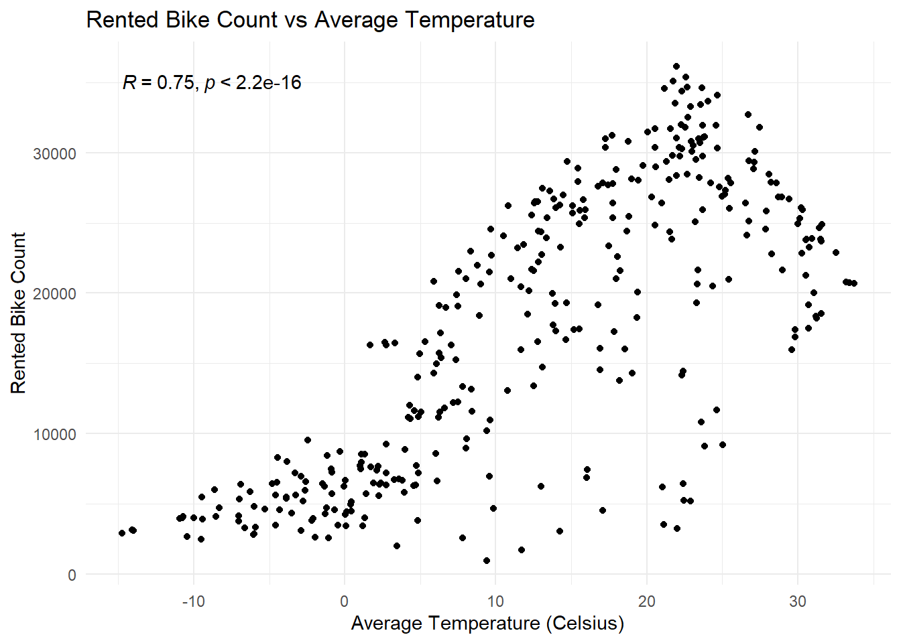
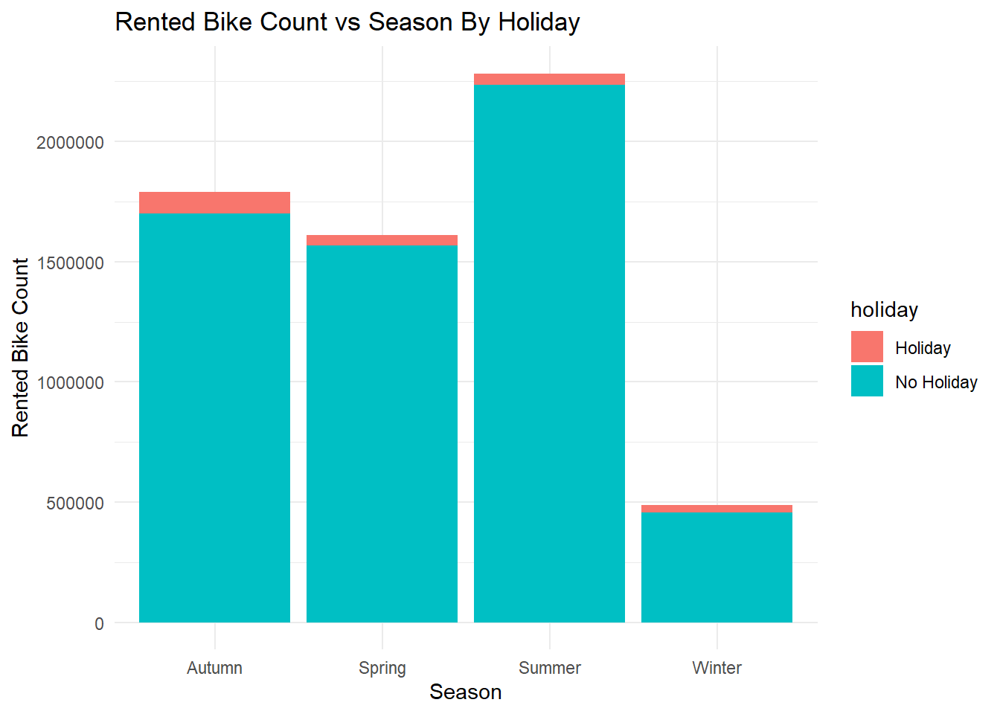
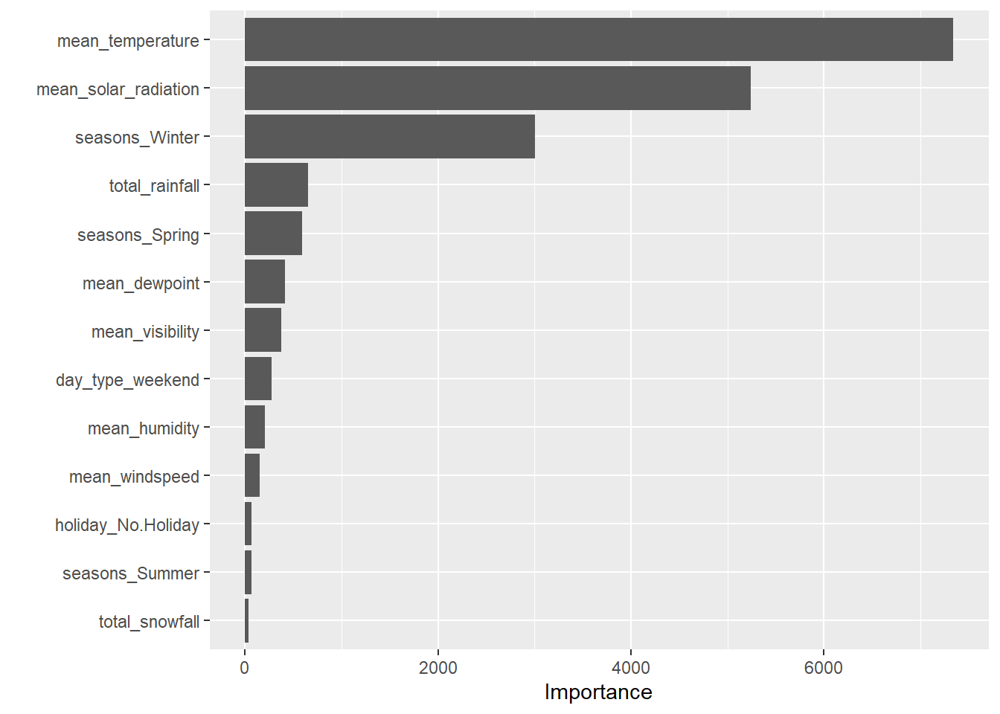
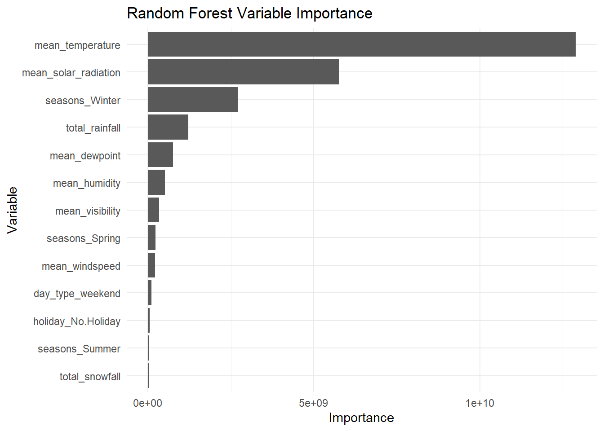

Reading in the Seoul bike sharing data set, using locale argument to fix error with element 1.
library(tidyverse)
Warning: package 'stringr' was built under R version 4.5.2
── Attaching core tidyverse packages ──────────────────────── tidyverse 2.0.0 ──
✔ dplyr 1.1.4 ✔ readr 2.1.5
✔ forcats 1.0.0 ✔ stringr 1.6.0
✔ ggplot2 4.0.0 ✔ tibble 3.3.0
✔ lubridate 1.9.4 ✔ tidyr 1.3.1
✔ purrr 1.1.0
── Conflicts ────────────────────────────────────────── tidyverse_conflicts() ──
✖ dplyr::filter() masks stats::filter()
✖ dplyr::lag() masks stats::lag()
ℹ Use the conflicted package (<http://conflicted.r-lib.org/>) to force all conflicts to become errors
bike <-read_csv("https://www4.stat.ncsu.edu/~online/datasets/SeoulBikeData.csv", locale=locale(encoding="latin1"))
Rows: 8760 Columns: 14
── Column specification ────────────────────────────────────────────────────────
Delimiter: ","
chr (4): Date, Seasons, Holiday, Functioning Day
dbl (10): Rented Bike Count, Hour, Temperature(°C), Humidity(%), Wind speed ...
ℹ Use `spec()` to retrieve the full column specification for this data.
ℹ Specify the column types or set `show_col_types = FALSE` to quiet this message.
EDA
Checking the Data
To start, we need to check our data set and prepare it for use in generating models. First we check for any missing values.
colSums(is.na(bike))
Date Rented Bike Count Hour
0 0 0
Temperature(°C) Humidity(%) Wind speed (m/s)
0 0 0
Visibility (10m) Dew point temperature(°C) Solar Radiation (MJ/m2)
0 0 0
Rainfall(mm) Snowfall (cm) Seasons
0 0 0
Holiday Functioning Day
0 0
It appears there are no missing values in the dataset. Next we will check the types of data in each column, as well as show summary stats for each numeric column and levels for categorical columns.
Date Rented Bike Count Hour Temperature(°C)
Length:8760 Min. : 0.0 Min. : 0.00 Min. :-17.80
Class :character 1st Qu.: 191.0 1st Qu.: 5.75 1st Qu.: 3.50
Mode :character Median : 504.5 Median :11.50 Median : 13.70
Mean : 704.6 Mean :11.50 Mean : 12.88
3rd Qu.:1065.2 3rd Qu.:17.25 3rd Qu.: 22.50
Max. :3556.0 Max. :23.00 Max. : 39.40
Humidity(%) Wind speed (m/s) Visibility (10m) Dew point temperature(°C)
Min. : 0.00 Min. :0.000 Min. : 27 Min. :-30.600
1st Qu.:42.00 1st Qu.:0.900 1st Qu.: 940 1st Qu.: -4.700
Median :57.00 Median :1.500 Median :1698 Median : 5.100
Mean :58.23 Mean :1.725 Mean :1437 Mean : 4.074
3rd Qu.:74.00 3rd Qu.:2.300 3rd Qu.:2000 3rd Qu.: 14.800
Max. :98.00 Max. :7.400 Max. :2000 Max. : 27.200
Solar Radiation (MJ/m2) Rainfall(mm) Snowfall (cm) Seasons
Min. :0.0000 Min. : 0.0000 Min. :0.00000 Length:8760
1st Qu.:0.0000 1st Qu.: 0.0000 1st Qu.:0.00000 Class :character
Median :0.0100 Median : 0.0000 Median :0.00000 Mode :character
Mean :0.5691 Mean : 0.1487 Mean :0.07507
3rd Qu.:0.9300 3rd Qu.: 0.0000 3rd Qu.:0.00000
Max. :3.5200 Max. :35.0000 Max. :8.80000
Holiday Functioning Day
Length:8760 Length:8760
Class :character Class :character
Mode :character Mode :character
Now that we have a good idea of the structure of the data as well as the kind of values we see for both numeric and categorical variables, lets convert the Date column to the Date type of data.
bike <- bike |>mutate(Date =dmy(Date))
The Date column is now a Date type of data. Now we should convert the other character data columns into factor data.
bike <- bike |>mutate(across(where(is.character), as.factor))
Now that we have categorical variables as factors, our last step to tidy the dataset will be to rename the columns into lower snake case for ease of use, the clean_names function from the janitor package does this automatically.
library(janitor)
Warning: package 'janitor' was built under R version 4.5.2
Attaching package: 'janitor'
The following objects are masked from 'package:stats':
chisq.test, fisher.test
The data is now cleaned nicely, so lets take a look at some summary statistics for bike rental count and bike rental count subsetted by categorical variable levels.
summary(bike$rented_bike_count)
Min. 1st Qu. Median Mean 3rd Qu. Max.
0.0 191.0 504.5 704.6 1065.2 3556.0
bike |>group_by(seasons) |>summarize(mean_bike_count =mean(rented_bike_count))
bike |>group_by(holiday) |>summarize(mean_bike_count =mean(rented_bike_count))
# A tibble: 2 × 2
holiday mean_bike_count
<fct> <dbl>
1 Holiday 500.
2 No Holiday 715.
bike |>group_by(functioning_day) |>summarize(mean_bike_count =mean(rented_bike_count))
# A tibble: 2 × 2
functioning_day mean_bike_count
<fct> <dbl>
1 No 0
2 Yes 729.
This investigation has revealed some interesting temporal patterns in the data, as well as very high extreme values of bike rentals, but most interesting is that no bikes are rented on days that the value of Functioning Day is “No”. This means that we should subset the data to only include days where the bike sharing system is functional.
bike <- bike |>filter(functioning_day =="Yes")
Next, in order to simplify future analyses of this data, the rented bike values will be summarized by day to give one value per day, as opposed to one value every hour each day.
`summarise()` has grouped output by 'date', 'seasons'. You can override using
the `.groups` argument.
head(daily_bike)
# A tibble: 6 × 12
date seasons holiday total_bike_count total_rainfall total_snowfall
<date> <fct> <fct> <dbl> <dbl> <dbl>
1 2017-12-01 Winter No Holiday 9539 0 0
2 2017-12-02 Winter No Holiday 8523 0 0
3 2017-12-03 Winter No Holiday 7222 4 0
4 2017-12-04 Winter No Holiday 8729 0.1 0
5 2017-12-05 Winter No Holiday 8307 0 0
6 2017-12-06 Winter No Holiday 6669 1.3 8.6
# ℹ 6 more variables: mean_temperature <dbl>, mean_humidity <dbl>,
# mean_windspeed <dbl>, mean_visibility <dbl>, mean_dewpoint <dbl>,
# mean_solar_radiation <dbl>
Now that we have a transformed data set that will be easier to analyze, lets recreate the summary stats from earlier for our new dataset. Then lets create some plots to explore if the relationships we might expect from the data are actually visible when plotted.
#Summary Stats for new datasetsummary(daily_bike$total_bike_count)
Min. 1st Qu. Median Mean 3rd Qu. Max.
977 6967 18563 17485 26285 36149
# A tibble: 2 × 2
holiday mean_bike_count
<fct> <dbl>
1 Holiday 12700.
2 No Holiday 17727.
#Plots to explore possible meteorological and temporal effects on rental bike uselibrary(ggpubr)
Warning: package 'ggpubr' was built under R version 4.5.2
daily_bike |>ggplot(aes(x = total_rainfall, y = total_bike_count)) +geom_point() +stat_cor(method ="pearson", label.x.npc =0.25) +facet_wrap(~seasons) +theme_minimal() +labs(title ="Rented Bike Count vs Rainfall", x ="Total Rainfall (mm)", y ="Rented Bike Count")

daily_bike |>ggplot(aes(x = mean_temperature, y = total_bike_count)) +geom_point() +stat_cor(method ="pearson") +theme_minimal() +labs(title ="Rented Bike Count vs Average Temperature", x ="Average Temperature (Celsius)", y ="Rented Bike Count")

daily_bike |>ggplot(aes(x = seasons, y = total_bike_count, fill = holiday)) +geom_col() +theme_minimal() +labs(title ="Rented Bike Count vs Season By Holiday", x ="Season", y ="Rented Bike Count")

Based on these explorations, some assumptions made about possible relationships we might see have been confirmed. Regardless of season, bike usage was low during high rainfall events, while its usage during dry periods was more variable. Seasonally, winter sees considerably less use of rental bikes than any other season, and summer has the most use of rental bikes. This is supported by the fact that rental bike use generally appears to increase with warmer temperatures, although we can see a possible indication that very warm weather (> 25 degrees Celsius) might actually see decrease in bike use as temperature increases, which indicates that the ideal temperature of bike use is likely around room temperature, or 22 degrees C. It is important to note with this that the variation of bike usage appears very scattered around this same value, which could be the effect of precipitation or other factors independent of temperature.
Split the Data
Before we start modeling, we will need to split the data into training and test set. We will use a 75/25 split of training and test set respectively while stratifying the split by seasons.
library(tidymodels)
Warning: package 'tidymodels' was built under R version 4.5.2
Now that we have created our training and test sets, we will create a 10-fold cross validation object which we can use for model tuning and evaluation at a later stage.
#creating a function for CV splitsget_cv_splits <-function(data, num_folds) { n <-nrow(data) size_fold <-floor(n/num_folds) random_indices <-sample(n) folds <-vector("list", num_folds)for (i inseq_len(num_folds)) {if(i < num_folds) { test_idx <- random_indices[((i-1)*size_fold +1):(i*size_fold)] } else { test_idx <- random_indices[((i-1)*size_fold +1):n] } train_idx <-setdiff(random_indices, test_idx) folds[[i]] <-list(analysis = train_idx, assessment = test_idx) }return(folds)}#applying the function to generate a 10 fold CV splitbike_folds_list <-get_cv_splits(bike_train, 10)bike_folds <-manual_rset(splits =map(bike_folds_list, ~make_splits(.x, data = bike_train)),ids =paste0("Fold", 1:10))
Now that we have our 10 fold CV splits, we can now proceed to modeling the bike sharing data.
Fitting MLR Models
To start with making models, we will first create several recipes. Our first recipe will be the simplest. The date variable is replaced with the weekday, weekend factor variable, as well as creating dummy variables for seasons, holidays, and the new factor variable for day type.
• Centering and scaling for: all_numeric_predictors()
• Dummy variables from: all_nominal_predictors()
Now let’s create a second recipe with the same steps as above, but with interactions between seasons and holiday, seasons and temperature, temperature and rainfall.
Next, we will set up a linear model fit and use with the lm engine.
lm_spec <-linear_reg() |>set_engine("lm")
Next we are going to pick a best model. In order to do this we need to fit our models using our 10 fold CV and consider the training set CV error, which will quantify which model is the best.
#creating workflows for each recipelm_wf1 <-workflow() |>add_model(lm_spec) |>add_recipe(bike_rec)lm_wf2 <-workflow() |>add_model(lm_spec) |>add_recipe(bike_rec2)lm_wf3 <-workflow() |>add_model(lm_spec) |>add_recipe(bike_rec3)#Fit models using the 10 fold CVset.seed(123)lm_res1 <-fit_resamples( lm_wf1, resamples = bike_folds, metrics =metric_set(rmse, rsq), control =control_resamples(save_pred =TRUE))lm_res2 <-fit_resamples( lm_wf2, resamples = bike_folds, metrics =metric_set(rmse, rsq), control =control_resamples(save_pred =TRUE))
→ A | warning: prediction from rank-deficient fit; consider predict(., rankdeficient="NA")
→ A | warning: prediction from rank-deficient fit; consider predict(., rankdeficient="NA")
There were issues with some computations A: x1
There were issues with some computations A: x6
There were issues with some computations A: x10
There were issues with some computations A: x10
#Comparing training CV performancecollect_metrics(lm_res1)
# A tibble: 2 × 6
.metric .estimator mean n std_err .config
<chr> <chr> <dbl> <int> <dbl> <chr>
1 rmse standard 4116. 10 239. pre0_mod0_post0
2 rsq standard 0.825 10 0.0206 pre0_mod0_post0
collect_metrics(lm_res2)
# A tibble: 2 × 6
.metric .estimator mean n std_err .config
<chr> <chr> <dbl> <int> <dbl> <chr>
1 rmse standard 3052. 10 288. pre0_mod0_post0
2 rsq standard 0.907 10 0.0162 pre0_mod0_post0
collect_metrics(lm_res3)
# A tibble: 2 × 6
.metric .estimator mean n std_err .config
<chr> <chr> <dbl> <int> <dbl> <chr>
1 rmse standard 4549. 10 1246. pre0_mod0_post0
2 rsq standard 0.807 10 0.0821 pre0_mod0_post0
Based on the rmse for these models, it appears that recipe 2 lm_res2 worked best to fit the data out of these three models. Next we will fit this model to the entire training data set and get the coefficients.
final_fit <-last_fit(lm_wf2, split = bike_split)
→ A | warning: prediction from rank-deficient fit; consider predict(., rankdeficient="NA")
collect_metrics(final_fit)
# A tibble: 2 × 4
.metric .estimator .estimate .config
<chr> <chr> <dbl> <chr>
1 rmse standard 3070. pre0_mod0_post0
2 rsq standard 0.909 pre0_mod0_post0
From this, we have found the RMSE of the final model fit as well as extracted coefficients for the final model to observe the relationships predicted between rented bike counts and a variety of measured variables
Hw9 Modeling Practice
We will now add more models to our training set, first we will make a tuned LASSO model
Registered S3 method overwritten by 'butcher':
method from
as.character.dev_topic generics
→ A | warning: There was 1 warning in `dplyr::mutate()`.
ℹ In argument: `model = iter(...)`.
Caused by warning:
! package 'future' was built under R version 4.5.2
There were issues with some computations A: x1
There were issues with some computations A: x1
Now that we have the best models selected, we will fit them to the full training data set.
final_lasso_wf <-finalize_workflow(lasso_wf, best_lasso)final_fit_lasso <-fit(final_lasso_wf, data = bike_train)final_tree_wf <-finalize_workflow(tree_wf, best_tree)final_fit_tree <-fit(final_tree_wf, data = bike_train)final_bag_wf <-finalize_workflow(bag_wf, best_bag)final_fit_bag <-fit(final_bag_wf, data = bike_train)final_rf_wf <-finalize_workflow(rf_wf, best_rf)final_fit_rf <-fit(final_rf_wf, data = bike_train)#including the best MLR model from Hw 8final_fit_lm <-last_fit(lm_wf2, split = bike_split)
→ A | warning: prediction from rank-deficient fit; consider predict(., rankdeficient="NA")
There were issues with some computations A: x1
There were issues with some computations A: x1
Now that we have fitted all of the best models to the training set, lets evaluate their performance on the test set. To do this neatly, we will write a function that will evaluate model using the metrics of rmse and mean absolute error (mae)
#function to evaluate model on test setevaluate_model <-function(fit, name) { preds <-predict(fit, new_data = bike_test) |>bind_cols(bike_test |>select(total_bike_count)) metrics <- preds |>metrics(truth = total_bike_count, estimate = .pred) |>filter(.metric %in%c("rmse", "mae")) |>mutate(model = name)return(metrics)}#Collect performance metrics of all modelsresults_lm <-collect_metrics(final_fit_lm) |>filter(.metric %in%c("rmse", "mae")) |>mutate(model ="Linear Regression (MLR)")results_lasso <-evaluate_model(final_fit_lasso, "LASSO Regression")results_tree <-evaluate_model(final_fit_tree, "Regression Tree")results_bag <-evaluate_model(final_fit_bag, "Bagged Tree")results_rf <-evaluate_model(final_fit_rf, "Random Forest")#Combine and arrange the results for ease of viewingall_results <-bind_rows(results_lm, results_lasso, results_tree, results_bag, results_rf)all_results_summary <- all_results |>arrange(.metric)print(all_results_summary)
# A tibble: 9 × 5
.metric .estimator .estimate .config model
<chr> <chr> <dbl> <chr> <chr>
1 mae standard 3157. <NA> LASSO Regression
2 mae standard 2339. <NA> Regression Tree
3 mae standard 2150. <NA> Bagged Tree
4 mae standard 2166. <NA> Random Forest
5 rmse standard 3070. pre0_mod0_post0 Linear Regression (MLR)
6 rmse standard 4060. <NA> LASSO Regression
7 rmse standard 3130. <NA> Regression Tree
8 rmse standard 2953. <NA> Bagged Tree
9 rmse standard 2759. <NA> Random Forest
Based on this comparison, the model with both the lowest rmse and mae is the random forest model, making it the overall best model.
Next we will extract the final model fits and display them in differing ways depending on the model
#Extract final coefficients (MLR and LASSO Model)final_mlr <- final_fit |>extract_fit_parsnip()mlr_coefs <-tidy(final_mlr)mlr_coefs
Warning: Cannot retrieve the data used to build the model (so cannot determine roundint and is.binary for the variables).
To silence this warning:
Call rpart.plot with roundint=FALSE,
or rebuild the rpart model with model=TRUE.
#Variable importance plot for bagged tree modellibrary(vip)
Attaching package: 'vip'
The following object is masked from 'package:utils':
vi
final_bag <- final_fit_bag |>extract_fit_parsnip()#baking the training data so the columns match what the model expectsrec <- final_fit_bag |>extract_recipe()train_processed <-bake(rec, new_data = bike_train)#seperating predictors and outcomestrain_x <- train_processed |>select(-total_bike_count)train_y <- train_processed$total_bike_count#continuing to the variable importance plot for the bagged tree modelbag_pred <-function(object, newdata) {predict(object, new_data = newdata) |>pull(.pred)}vip(final_bag, method ="permute", train = train_x, target = train_y, metric ="rmse", pred_wrapper = bag_pred, num_features =15)

#Variable importance plot for random forest modelfinal_rf <- final_fit_rf |>extract_fit_parsnip()rf_model <- final_rf$fitrf_importance <-tibble(variable =names(rf_model$variable.importance),importance = rf_model$variable.importance) |>arrange(desc(importance))rf_importance |>ggplot(aes(x = importance, y =reorder(variable, importance))) +geom_col() +labs(title ="Random Forest Variable Importance", x ="Importance", y ="Variable") +theme_minimal()

Lastly, we will fit the random forest model (the best one) to all of the data, and look at the variable importance plot.